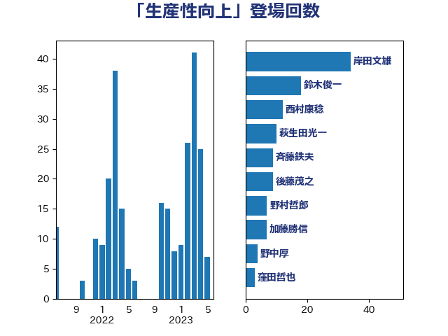

単語「生産性向上」

| 岸田文雄 | 自由民主党 | 34 回 |
| 鈴木俊一 | 自由民主党 | 18 回 |
| 西村康稔 | 自由民主党 | 12 回 |
| 萩生田光一 | 自由民主党 | 10 回 |
| 斉藤鉄夫 | 公明党 | 9 回 |
| 後藤茂之 | 自由民主党 | 9 回 |
| 野村哲郎 | 自由民主党 | 7 回 |
| 加藤勝信 | 自由民主党 | 7 回 |
| 野中厚 | 自由民主党 | 4 回 |
| 窪田哲也 | 公明党 | 3 回 |
| 武部新 | 自由民主党 | 3 回 |
| 岡田直樹 | 自由民主党 | 3 回 |
| 土田慎 | 自由民主党 | 3 回 |
| 阿部司 | 日本維新の会 | 2 回 |
| 稲津久 | 公明党 | 2 回 |
| 神谷政幸 | 自由民主党 | 2 回 |
| 林芳正 | 自由民主党 | 2 回 |
| 杉本和巳 | 日本維新の会 | 2 回 |
| 新妻秀規 | 公明党 | 2 回 |
| 山本博司 | 公明党 | 2 回 |
| 山口那津男 | 公明党 | 2 回 |
| 天畠大輔 | れいわ新選組 | 2 回 |
| 鰐淵洋子 | 公明党 | 1 回 |
| 長友慎治 | 国民民主党 | 1 回 |
| 野上浩太郎 | 自由民主党 | 1 回 |
| 里見隆治 | 公明党 | 1 回 |
| 赤澤亮正 | 自由民主党 | 1 回 |
| 藤田文武 | 日本維新の会 | 1 回 |
| 藤木眞也 | 自由民主党 | 1 回 |
| 茂木敏充 | 自由民主党 | 1 回 |
| 篠原孝 | 立憲民主党 | 1 回 |
| 空本誠喜 | 日本維新の会 | 1 回 |
| 神谷裕 | 立憲民主党 | 1 回 |
| 石井章 | 日本維新の会 | 1 回 |
| 石井正弘 | 自由民主党 | 1 回 |
| 畦元将吾 | 自由民主党 | 1 回 |
| 田名部匡代 | 立憲民主党 | 1 回 |
| 片山さつき | 自由民主党 | 1 回 |
| 浜口誠 | 国民民主党 | 1 回 |
| 津島淳 | 自由民主党 | 1 回 |
| 森屋宏 | 自由民主党 | 1 回 |
| 梶山弘志 | 自由民主党 | 1 回 |
| 松山政司 | 自由民主党 | 1 回 |
| 東徹 | 日本維新の会 | 1 回 |
| 日下正喜 | 公明党 | 1 回 |
| 掘井健智 | 日本維新の会 | 1 回 |
| 徳永エリ | 立憲民主党 | 1 回 |
| 平林晃 | 公明党 | 1 回 |
| 平木大作 | 公明党 | 1 回 |
| 山際大志郎 | 自由民主党 | 1 回 |
| 山田勝彦 | 立憲民主党 | 1 回 |
| 山崎誠 | 立憲民主党 | 1 回 |
| 尾崎正直 | 自由民主党 | 1 回 |
| 小野田紀美 | 自由民主党 | 1 回 |
| 小沢雅仁 | 立憲民主党 | 1 回 |
| 大西英男 | 自由民主党 | 1 回 |
| 堂込麻紀子 | 無所属 | 1 回 |
| 吉井章 | 自由民主党 | 1 回 |
| 古川禎久 | 自由民主党 | 1 回 |
| 務台俊介 | 自由民主党 | 1 回 |
| 倉林明子 | 日本共産党 | 1 回 |
| 伊藤達也 | 自由民主党 | 1 回 |
| 伊藤渉 | 公明党 | 1 回 |
| 井林辰憲 | 自由民主党 | 1 回 |
| 中川康洋 | 公明党 | 1 回 |
| 三浦信祐 | 公明党 | 1 回 |
| 一谷勇一郎 | 日本維新の会 | 1 回 |
| ながえ孝子 | 無所属 | 1 回 |
| こやり隆史 | 自由民主党 | 1 回 |
| おおつき紅葉 | 立憲民主党 | 1 回 |